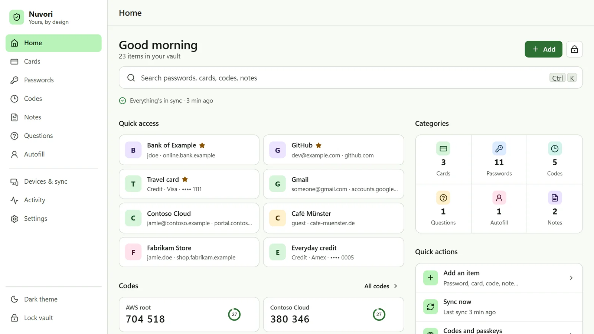
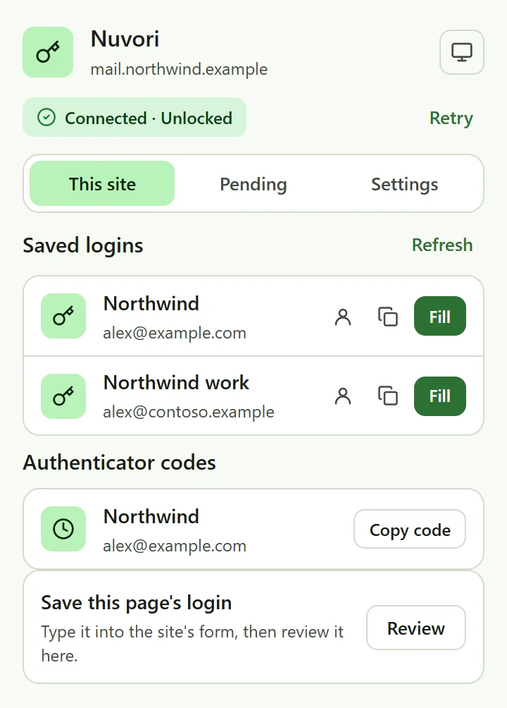
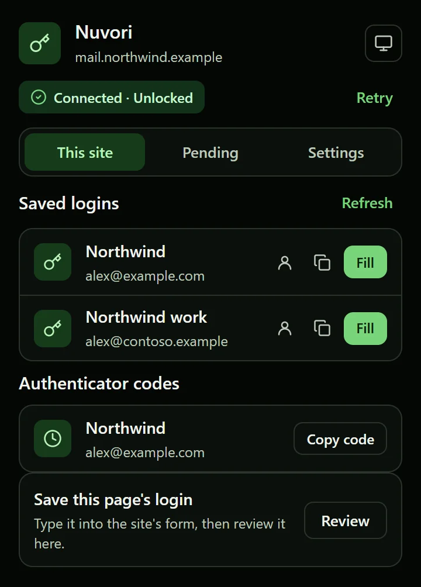
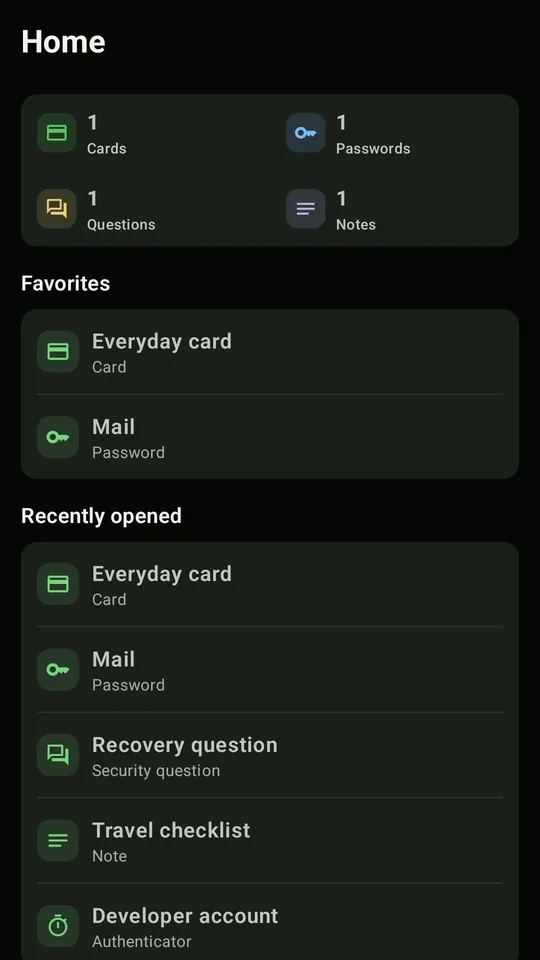
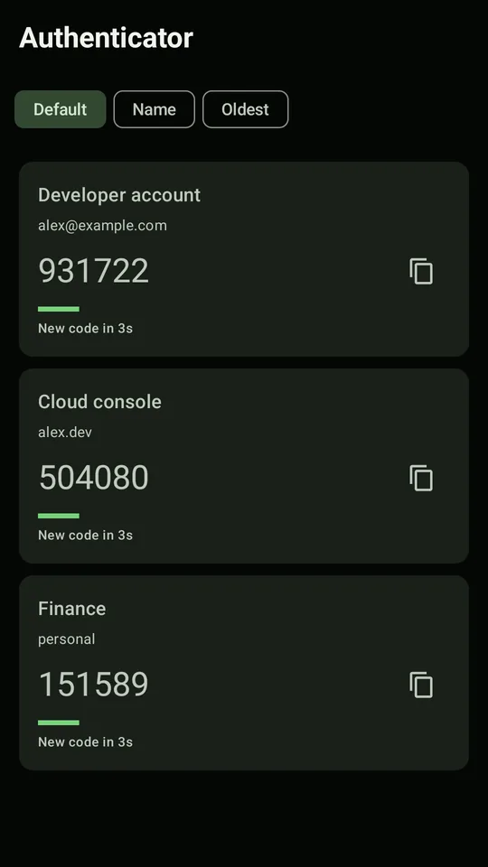

Switch browsers, not passwords.
Nuvori keeps your passwords, cards, codes and passkeys in an encrypted vault on your own PC and phone, not inside a browser. Add the free extension to whichever browser you try next, and the same logins fill there.
Free. No account. Windows and Android.
Your vault lives in Nuvori, not in a browser
The extension has no vault of its own. It asks Nuvori for Windows for the one login you pick, and your master password never reaches the browser. So a new browser needs only the extension.
Your PC
- Zen
- Helium
- Edge
- any other
The extension in each browser asks for one login at a time.
Changes travel over your Wi-Fi, or through your own Google Drive when you're apart. Encrypted and signed.
Your phone
Fills in apps and browsers through Android autofill. A Wear OS watch shows your codes.
Nuvori serverThere isn't one. You don't create an account, and the developer never receives your vault.
Encrypted on each device
The vault opens with your master password, or with Windows Hello or your fingerprint once you turn them on.
Sync is optional
Up to 6 phones or tablets and 2 Windows PCs share one vault. If two devices change the same item, Nuvori keeps both versions and asks you to choose.
Google Drive sees only encrypted files
Nuvori uses its own hidden app folder in your Drive, and can't see your other files.
No ads, no analytics
The apps and the extension send no usage data, crash reports or advertising IDs.
The same vault on your PC, in the browser and on your phone
Each device keeps its own full copy of the vault and works offline. Change an item on one, and the others catch up the next time they connect. Every screenshot here uses sample data.




Nuvori for Windows
Windows 10 (version 2004) or newer, 64-bit.
- Holds the vault for every browser on the PC.
- Unlocks with Windows Hello, once you turn it on.
- Searches your vault from any app with Ctrl+Shift+Space.
- Offers your passkeys in the Windows 11 passkey prompt (Microsoft Store version).
- Imports a KeePass or KeePassXC database.
Nuvori Password Fill
The browser extension. Chromium 127 or Firefox 140 and newer, on Windows.
- Fills logins, cards, addresses and codes on HTTPS pages.
- Offers a login only on the exact site you saved it for.
- Offers to save a new login after you sign in.
- Can turn off the browser's own “Save password?” prompt.
- Never receives your master password or your vault.
Nuvori for Android and Wear OS
Android 10 or newer. Wear OS 3 or newer for the watch.
- Fills in apps, and on websites in 13 verified browsers, as Android's autofill service.
- Saves and uses passkeys on Android 14 or newer.
- The Quick copy tile in Quick Settings copies a password, code or card detail.
- Imports password exports from browsers and other password managers. How to import
- Shows your codes on a Wear OS watch, offline after setup.


What Nuvori doesn't do
Read this before you move your passwords.
- No Mac, iPhone, iPad or LinuxAnd no Safari. The extension works only on Windows, next to Nuvori for Windows.
- No master password resetNobody can reset a forgotten master password, including the developer. Keep a copy somewhere safe, for example on paper at home.
- No independent audit yetNuvori has not had an independent security audit.
- No filling on plain HTTPThe extension fills only on HTTPS pages.
- No passkeys in the extensionOn Windows 11, the Microsoft Store version offers your passkeys in the Windows passkey prompt instead.
- Not in every store yetThe Windows app is under review in the Microsoft Store. The Android and Wear OS apps are in closed testing.
Get Nuvori
Free, with no ads, no in-app purchases and no subscription. Start with Nuvori for Windows, add the extension to each browser you use, and pair your phone when you're ready.
-
Nuvori for Windows
Windows 10 (version 2004) or newer, 64-bit.
Under review in the Microsoft Store
Open the Microsoft StoreQR code

-
Nuvori Password Fill
The browser extension, for browsers built on Chromium or Firefox. Needs Nuvori for Windows on the same PC. In Edge, allow extensions from other stores first.
Available in the Chrome Web Store
Under review on Firefox Add-ons
-
Nuvori for Android
Android 10 or newer. The Google Play link opens for invited testers.
Closed testing on Google Play
-
Nuvori for Wear OS
Wear OS 3 or newer, with the phone app. Install it on your watch from the same Google Play listing.
Closed testing on Google Play


The Android and Wear OS apps are in closed testing. Fill in the short form with your Gmail address, and you'll be added as a tester.
Common questions
Is Nuvori free?
Yes. The Windows, Android and Wear OS apps and the browser extension are all free. There are no ads, no in-app purchases and no subscription. Optional Google Drive sync uses storage in your own Google account.
Do I need to create an account?
No. You create a vault with a master password on your device. There is no sign-up and no Nuvori account, because there is no Nuvori server.
I'm switching browsers. What happens to my passwords?
Nothing. They stay in Nuvori for Windows, not in the browser. Add Nuvori Password Fill to the new browser. Nuvori connects it, and the same logins, cards, addresses and codes fill there. More about switching
Can I bring my passwords from another app?
Yes. Nuvori for Android imports CSV exports from Chrome, Brave, Edge, Firefox, Safari, 1Password, LastPass, Dashlane and Bitwarden, and Bitwarden JSON exports. Nuvori for Windows imports KeePass databases. Delete the export file after the import. Step by step
How many devices can share one vault?
Up to six phones or tablets and two Windows PCs. A watch connects through your phone.